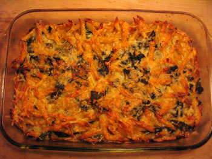

Macaroni and cheese
This isn’t very exciting, but I made macaroni and cheese for the very first time on Thursday night. I was inspired by my mom’s panko version and the Times dining section last week. I couldn’t find panko at Whole Foods, and I added some spinach that I needed to use. Instead of all cheddar, I used a mixture of cheddar and fontina. The result was good but a little dry.

Next time I’ll use more cheese, more milk, and bread crumbs (which FreshDirect will deliver to me tomorrow morning!). Anyway, for a first try, it was perfectly acceptable.
Comments
I don’t know why you didn’t use my recipe!
Because I couldn’t find the panko! I have some now, though. Never fear. Priority number one was getting rid of that spinach!
Add a comment